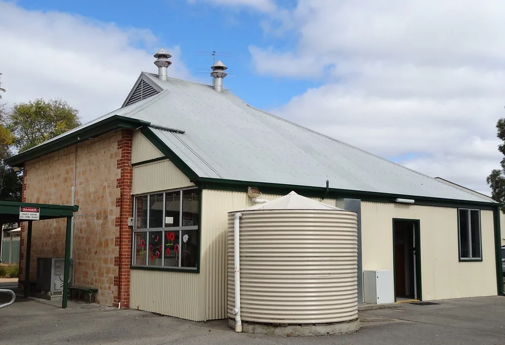

매일유업 평택공장 연유탱크 청소 중 근로자 질식…1명 사망
경기 평택의 매일유업 공장에서 탱크를 청소하던 근로자 2명이 쓰러져 이 중 1명이 숨지는 사고가 발생했다. 9일 오후 2시 58분쯤 평택시 진위면에 위치한 매일유업 평택공장에서 50대 근로자 2명이 탱크 안에 쓰러진 채 발견됐다고 소방 당국이 밝혔다. 신고를 받은 구급대가 현장에 출동해 이들을 인근 병원으로 옮겼지만 결국 한 명은 목숨을 잃었다.
사고는 공장 내 연유 저장탱크에서 발생했다. 이 탱크는 높이 3.4m, 지름 1.9m 규모로, 근로자들은 탱크 내부를 청소하던 중 변을 당한 것으로 추정된다. 공장 직원이 쓰러진 이들을 먼저 발견해 곧바로 병원으로 옮겼지만, 50대 근로자 A씨는 끝내 숨졌고 다른 50대 근로자 1명은 경상을 입은 것으로 파악됐다. 두 사람은 같은 팀으로 함께 청소 작업을 하던 것으로 전해졌다.

쓰러진 근로자들에게서 외상은 발견되지 않은 것으로 알려졌다. 경찰과 소방 당국은 이들이 밀폐된 탱크 내부에서 작업하다 산소 결핍 등으로 질식했을 가능성에 무게를 두고 정확한 사고 경위를 조사하고 있다. 현장에서는 별다른 폭발이나 화재 흔적은 발견되지 않았으며, 화학물질 누출 정황도 확인되지 않은 것으로 전해졌다.
전문가들은 밀폐된 저장탱크 내부에 남은 찌꺼기가 부패하거나 세척제를 사용할 경우 산소가 급격히 소모되면서 유해가스가 축적될 수 있다고 지적한다. 이 같은 밀폐공간 작업은 환기가 제대로 이뤄지지 않으면 순식간에 의식을 잃을 수 있어, 산업 현장에서 반복적으로 인명사고가 발생해온 대표적인 고위험 작업으로 꼽힌다. 특히 냄새나 색깔로는 유해가스 농도를 가늠하기 어려워, 사전 측정 없이 작업에 들어갈 경우 위험을 인지하지 못한 채 그대로 노출되는 경우가 많다는 게 전문가들의 설명이다.

경찰은 공장 관계자를 상대로 당시 구체적인 작업 지시 내용과 사고 경위, 안전 수칙 준수 여부 등을 조사하고 있다. 밀폐공간 작업 전 산소 농도를 측정했는지, 감시인을 배치했는지, 작업자들에게 관련 안전교육이 사전에 이뤄졌는지 등이 조사의 핵심이 될 전망이다. 숨진 근로자의 정확한 사인을 규명하기 위한 부검도 함께 진행할 방침이다.
밀폐공간 작업 시에는 사전 산소 농도 측정과 충분한 환기, 외부 감시인 배치, 공기호흡기 등 보호장비 착용 등 안전 절차를 반드시 지켜야 한다는 것이 산업안전 전문가들의 공통된 지적이다. 이번 사고를 계기로 식품 제조업체들의 탱크·저장고 청소 작업에 대한 안전관리 실태를 전반적으로 점검해야 한다는 목소리도 커지고 있다. 특히 외주업체나 소규모 인력이 반복적으로 투입되는 청소 공정의 경우, 안전교육이 형식적으로 이뤄지는 경우가 적지 않다는 지적도 함께 나온다.
매일유업 측은 사고 경위 파악에 협조하며 재발 방지 대책을 마련하겠다는 입장을 밝힌 것으로 전해졌다. 고용노동부도 사고 원인 조사와 함께 관련 법규 위반 여부를 살펴볼 것으로 예상되며, 필요할 경우 해당 공정에 대한 작업중지 명령 등 후속 조치가 뒤따를 가능성도 있다.